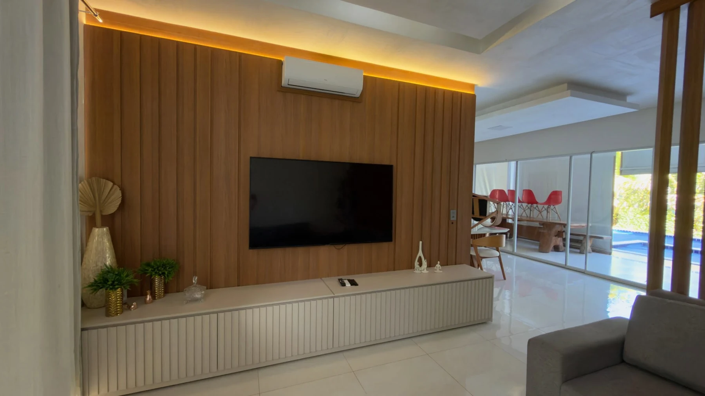
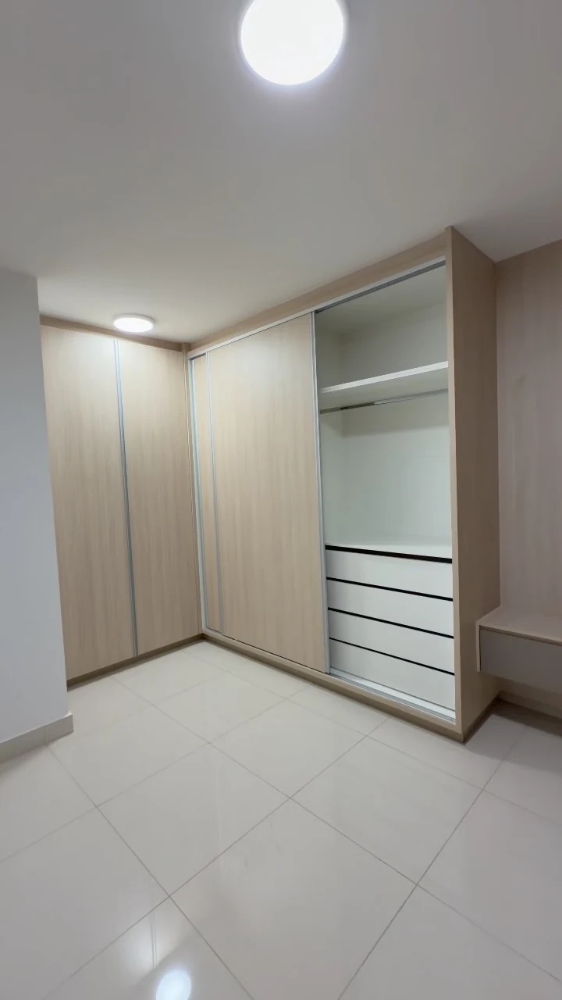
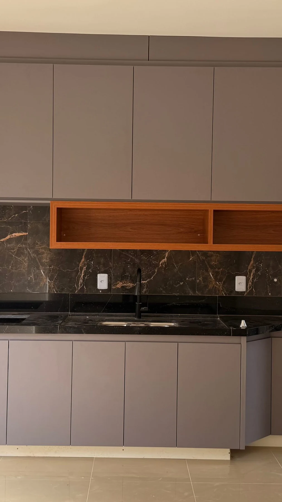
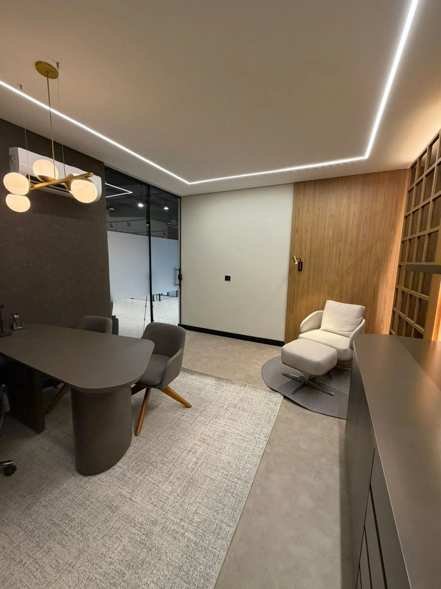
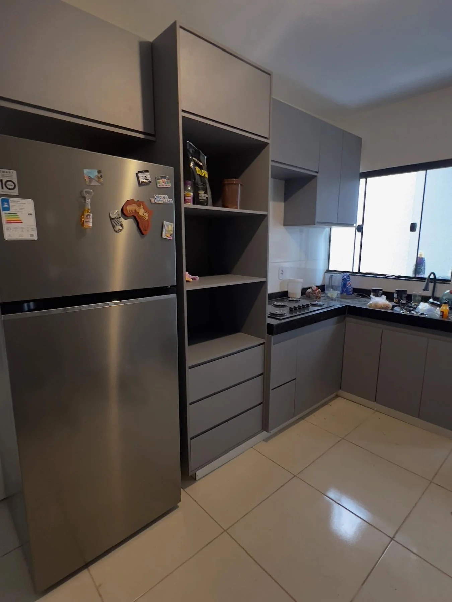

Painel semi-ripado e rack claro
Madeira na parede, frentes claras e uma linha de luz no alto.
Goiânia e região
Painéis, cozinhas e armários.
Encontre nos ambientes da Art Leal uma combinação para começar seu projeto.

Do nicho da cozinha ao painel da sala,
veja as combinações publicadas pela loja.
9 itens nesta seleção
Madeira na parede, frentes claras e uma linha de luz no alto.
Bancada escura, gavetas e prateleiras entre os armários superiores.
Um volume amadeirado junto à passagem para a cozinha.

Vista de detalheVista do encontro entre o armário e o módulo com espelho.
Módulos superiores, bancada e armário alto no mesmo ambiente.

Vista de detalheO contraste com a bancada escura e o revestimento com veios.

Vista de detalhePainel, estante lateral e frentes escuras na composição do escritório.
Armários no alto, painel em madeira e dois módulos suspensos.

Vista de detalheGavetas na base, espaços abertos na torre e armários junto à bancada.
Referências de ambientes e detalhes publicados. Medidas, materiais e composição são definidos na conversa sobre o seu espaço.
Olhe mais de perto
Uma frente lisa junto à madeira. O nicho que interrompe o armário. A luz que acompanha o painel.
Escolha o que chamou sua atenção e leve essa ideia para a conversa com a Art Leal.
Preparar minha referênciaO próximo ambiente pode ser o seu
Separe a referência e as medidas que você já tem. Revise a mensagem, copie e leve para o atendimento da Art Leal no Instagram.
@art_lealmoveisPara uma conversa mais precisa
Uma foto do ambienteAs medidas disponíveisO detalhe que você gostouArt Leal Móveis
Móveis planejados.
Goiânia e região.